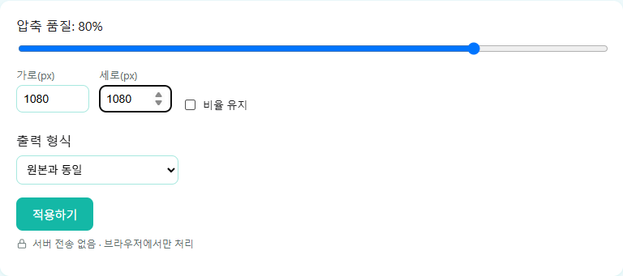

IMAGE TOOLBOX / GUIDE
인스타그램·네이버 블로그, 이미지 몇 픽셀이 적당할까
플랫폼마다 권장 규격이 다릅니다. 정확한 픽셀 크기를 정리했습니다.
인스타그램 이미지 규격
피드 게시물(4:5) — 1080 × 1350px.
정사각형 게시물(1:1) — 1080 × 1080px.
스토리·릴스(9:16) — 1080 × 1920px.
네이버 블로그 이미지 규격
게시글 썸네일(검색 노출용) — 1300 × 885px.
모바일 앱 커버 이미지 — 1080 × 1300px.
브라우저에서 규격에 맞게 크기 조정하는 법
스마트폰으로 찍은 사진은 대부분 4:3이나 1:1에 가까운 비율이라 인스타그램이 요구하는 4:5(피드)나 9:16(스토리) 비율과 그대로 맞아떨어지지 않는 경우가 많습니다. 이럴 때는 사진 편집 프로그램으로 원하는 비율에 맞게 먼저 잘라낸 다음, 이미지 압축 도구의 가로/세로 픽셀 입력란에 목표 규격(예: 1080 × 1350)을 직접 입력해 정확한 픽셀 크기로 맞추는 순서가 안전합니다. 이때 '비율 유지' 옵션을 꺼두어야 가로세로 값을 각각 원하는 숫자로 지정할 수 있습니다. 특히 스토리·릴스처럼 세로로 긴 화면은 기기에 따라 위아래 끝부분이 가려질 수 있으므로, 자르는 단계에서 글자나 얼굴 같은 중요한 내용은 화면 중앙에 가깝게 배치해두는 것이 좋습니다.

플랫폼별로 매번 다른 사진을 준비하기 번거롭다면, 가장 넓은 비율(9:16 스토리용)로 원본을 하나 마련해두고 필요할 때마다 4:5나 1:1로 다시 잘라 쓰는 방법도 있습니다. 세로로 긴 원본에서 가운데 부분을 잘라내면 정사각형이나 4:5 비율로도 자연스럽게 재사용할 수 있지만, 반대로 정사각형 원본에서 세로로 긴 스토리 비율을 만들려면 위아래에 여백을 채워야 해서, 화질 손해가 없는 방향(넓은 비율 → 좁은 비율)으로 원본을 준비하는 것이 유리합니다.
자주 묻는 질문
정사각형 사진을 인스타그램 스토리에 올려도 되나요?
업로드는 되지만 화면 비율(9:16)과 맞지 않아 위아래에 여백이 생기거나 잘릴 수 있습니다. 스토리는 1080×1920px 비율로 미리 맞춰서 올리는 것이 더 안전합니다.
네이버 블로그 썸네일 규격을 안 맞추면 어떻게 되나요?
업로드 자체는 가능하지만 검색 결과나 목록에서 이미지가 원하는 비율로 잘려서 보일 수 있습니다. 1300×885px에 맞춰두면 노출되는 화면에서 의도한 대로 보일 가능성이 높아집니다.
이미지 크기를 규격보다 작게 올리면 문제가 되나요?
플랫폼이 자동으로 확대해서 보여주긴 하지만 화질이 흐려질 수 있습니다. 가능하면 권장 픽셀 크기 이상의 원본에서 시작해 정확한 크기로 맞추는 것이 좋습니다.
페이스북이나 X(트위터)에도 비슷한 규격을 쓸 수 있나요?
X(트위터)는 세로형 이미지 1080×1350px(4:5), 정사각형 1080×1080px을 지원해 인스타그램 피드 규격과 거의 같습니다. 페이스북은 위치마다 표시 방식이 조금씩 달라서, 여러 플랫폼에 두루 쓸 사진이라면 가장 넓은 비율로 원본을 만들어두고 필요할 때 다시 자르는 방법을 권장합니다.
여러 장을 한 번에 규격에 맞게 변환할 수 있나요?
아니요. 이 사이트의 압축 도구는 한 번에 한 장씩 처리합니다. 여러 장을 같은 규격으로 맞추려면 한 장씩 순서대로 업로드해서 처리해야 합니다.
규격보다 훨씬 큰 사진을 올리면 자동으로 잘리나요?
아니요. 이 도구는 자르기(크롭)가 아니라 가로세로 값을 직접 지정해 늘리거나 줄이는 방식입니다. 원본 비율이 목표 규격과 다르면 화면이 눌리거나 늘어나 보일 수 있어, 먼저 사진 편집 프로그램으로 원하는 비율에 맞게 잘라내는 과정이 필요합니다.